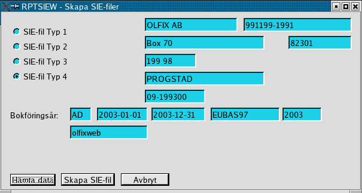

Order/Lager/Fakturering för Linuxsystem
Användarmanual
Kapitel Rapporter
Version 0.42
2005-04-16
This program is free software; you can
redistribute it and/or modify
it under the terms of the GNU General Public License as published by
the Free Software Foundation; either version 2 of the License, or
(at your option) any later version.
Copyright 2004 Jan Pihlgren.
Skapande av SIE-rapport typ 4.
Skapande av SIE-rapport typ 4.

Välj först vilken typ av SIE-fil som önskas.(Bara typ 4 är ännu implementerad)
Bokföringsår: Tvåställig bokstavskombination som anger vilket
bokföringsår som avses.
Fyll i bokföringsår och tryck på Enter eller klicka på knappen märkt Hämta. Bokföringsår anges med två tecken, normalt 2 bokstäver.
Uppgifter om företaget samt information om bokföringsåret visas på skärmen.
När bokföringsåret börjar och slutar samt vilken kontoplan som används och vilket beskattningsår som avses.
Därefter klickar man på knappen märkt Skapa SIE-fil
Filen finns sedan att hämta i mappen /tmp och har namnet SIEtyp4.txt.
Till början